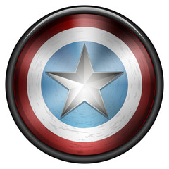

Expedientes de tus personaje favoritos

Spider Man
Spider-Man, traducido en ocasiones como El Hombre Araña,es un personaje creado por los estadounidenses Stan Lee y Steve Ditko, e introducido en el cómic Amazing Fantasy n.° 15, publicado por Marvel Comics en agosto de 1962.Se trata de un superhéroe que emplea sus habilidades sobrehumanas, reminiscentes de una araña, para combatir a otros supervillanos que persiguen fines siniestros.
Su creación se remonta a principios de la década de 1960 como respuesta al creciente interés del público adolescente en los cómics y el éxito de Los 4 Fantásticos.Tras su primera aparición en Amazing Fantasy.Marvel decidió producir una serie individual titulada The Amazing Spider-Man, cuyo ejemplar inicial salió a la venta en marzo de 1963. Desde entonces se han distribuido otros varios cómics relacionados con el personaje, así como otros productos que han derivado en el establecimiento de una franquicia de medios.
Si bien posee múltiples versiones alternativas que han propiciado el desarrollo de un multiverso, los orígenes y rasgos principales de Spider-Man han permanecido mayormente invariables con el transcurso del tiempo. Generalmente su identidad secreta es Peter Parker, un joven huérfano neoyorquino que adquiere superpoderes después de ser mordido por una araña radiactiva, y cuya ideología como héroe se ve reflejada primordialmente en la expresión «un gran poder conlleva una gran responsabilidad». Suele ser asociado con una personalidad bromista, amable, inventiva y optimista, lo que le ha llevado a ser catalogado como el «vecino amigable» de cualquiera lo cual, aunado a sus vivencias caracterizadas por los problemas cotidianos, atrajeron el interés del público al contrastar con el arquetipo de superhéroe de la industria.
Entre sus habilidades destacan la fuerza, el combate y la inteligencia, además de ser capaz de producir y lanzar telarañas sintéticas con ayuda de unos lanzadores que van sujetos a sus muñecas; trepar, adherirse y desplazarse a través de muros y edificaciones; y percibir peligros y amenazas a su alrededor de forma precognitiva gracias a su «sentido arácnido». Algunas de sus colaboraciones con otros superhéroes incluyen a Antorcha Humana, Iron Man, Capitán América y Los Vengadores, mientras que algunos de sus rivales más recurrentes son el Duende Verde, Doctor Octopus y Venom, así como grupos delictivos como los Seis Siniestros y los Herederos.
Spider-Man es considerado como uno de los mejores personajes de todos los tiempos, cuya popularidad e influencia lo ha llevado a ser adoptado por Marvel como su mascota, además de ser el superhéroe más redituable de la industria cuyos ingresos excedieron los veinticinco mil millones USD en 2018. Su franquicia incluye producciones televisivas, cinematográficas, radiofónicas, literarias y de videojuegos. Los actores que han interpretado al personaje en el cine son Tobey Maguire, Andrew Garfield y Tom Holland.
Iron Man
Iron Man (titulada Iron Man: el hombre de hierro en Hispanoamérica) es una película de superhéroes. Es la primera entrega del Universo cinematográfico de Marvel. La cinta fue dirigida por Jon Favreau, con un guion de Stan Lee, Hawk Ostby, Art Marcum y Matt Holloway. Es protagonizada por Robert Downey Jr, Terrence Howard, Jeff Bridges, Shaun Toub y Gwyneth Paltrow. La trama gira en torno a Tony Stark, un empresario e ingeniero, que construye un exoesqueleto motorizado y se convierte en Iron Man, un superhéroe tecnológicamente avanzado.
El proyecto de la película había comenzado desde 1990 en manos de Universal Pictures, Paramount Pictures, y New Line Cinema sucesivamente en varios momentos, antes que Marvel Studios readquiriera los derechos en 2005. Marvel puso al proyecto en producción como su primera película autofinanciada, con Paramount Pictures como su distribuidora. Favreau firmó como director, apostando por una idea naturalista, y eligió rodar el filme principalmente en California, rechazando el escenario de la Costa Este de los cómics para diferenciarla de varias películas de superhéroes que transcurren en entornos al estilo de Nueva York. Durante el rodaje, los actores tenían la libertad de crear sus propios diálogos, ya que la preproducción se centraba en la historia y acción. La creación del personaje principal resultó de una mezcla entre las versiones de goma y metal de las armaduras, creadas por la empresa de Stan Winston, e imágenes generadas por computadora.
Iron Man tuvo su premier en Sídney el 14 de abril de 2008, y se estrenó en cines el 2 de mayo. Recibió reseñas generalmente positivas de parte de la crítica y de la audiencia, con elogios en particular a la actuación de Downey como Tony Stark y recaudó más de $585 millones contra un presupuesto de $140 millones. El American Film Institute eligió a la cinta como una de las diez mejores del año. Una secuela, Iron Man 2, se estrenó el 7 de mayo de 2010, y otra, Iron Man 3, salió en cines el 3 de mayo de 2013.
Capitan America
El Capitán América, cuyo nombre real es Steven "Steve" Grant Rogers, es un superhéroe ficticio que aparece en los cómics estadounidenses publicados por Marvel Comics. Creado por los historietistas Joe Simon y Jack Kirby, el personaje apareció por primera vez en Captain America Comics #1 (marzo de 1941) de Timely Comics, predecesor de Marvel Comics. El Capitán América fue diseñado como un supersoldado patriota que luchaba frecuentemente contra las potencias del Eje en la Segunda Guerra Mundial, y fue el personaje más popular de Timely Comics durante el período de guerra. La popularidad de los superhéroes se desvaneció después de la guerra, y el cómic del Capitán América dejó de editarse en 1950, con un breve resurgimiento en 1953. Desde que Marvel Comics revivió al personaje en 1964, el Capitán América se ha mantenido en publicación.
El Capitán América viste un traje que lleva un motivo de la bandera de los Estados Unidos, y utiliza un escudo casi indestructible que lanza como proyectil. El personaje es generalmente representado como el álter ego de Steve Rogers, un joven frágil mejorado a la cima de la perfección humana por un suero experimental S.S.S. (Suero supersoldado) para ayudar a los esfuerzos inminentes del gobierno de Estados Unidos en la Segunda Guerra Mundial. Cerca del final de la guerra, queda atrapado en el hielo y sobrevive en animación suspendida hasta que es descongelado en el presente. A pesar de que el Capitán América a menudo lucha por mantener sus ideales como un hombre fuera de su tiempo con sus realidades modernas, sigue siendo una figura muy respetada en su comunidad, hasta convertirse en el líder de Los Vengadores.
El Capitán América fue el primer personaje de Marvel Comics que apareció en medios fuera de los cómics con el estreno de la serie de 1944, Capitán América. Desde entonces, el personaje ha aparecido en otras películas y series de televisión. En el Universo Cinematográfico de Marvel fue interpretado por Chris Evans en Capitán América: El primer vengador (2011), The Avengers (2012), Captain America: The Winter Soldier (2014), Avengers: Age of Ultron (2015), un cameo en Ant-Man (2015), Capitán América: Civil War (2016), un cameo en Spider-Man: Homecoming (2017), Avengers: Infinity War (2018), un cameo en Capitana Marvel (2019) y Avengers: Endgame (2019).
Expedientes de tus personaje favoritos